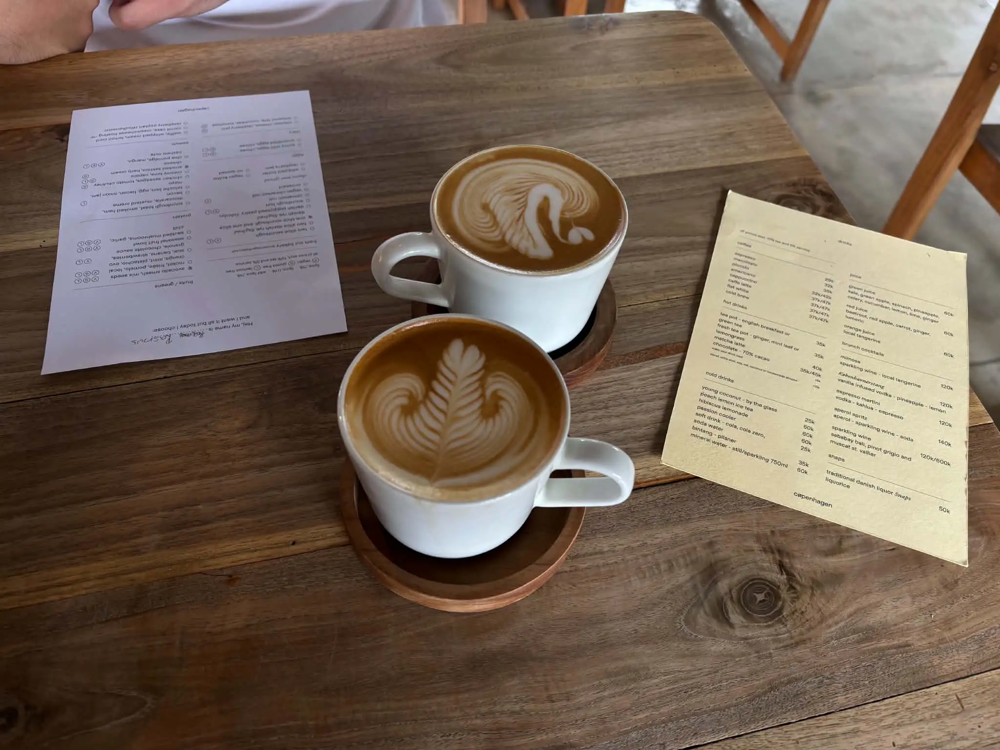

HVAD VIL DU LÆRE?
Fra den perfekte espresso til dit første hjerte
KAFFEGUIDEN
Find din kaffeLATTE ART
Lær latte artGod kaffe behøver ikke være kompliceret. Her finder du simple guides til dig, der gerne vil blive klogere på kaffe og lære at lave den selv. Lær om alt fra kaffebønner og forskellige kaffetyper til steaming af mælk og latte art – forklaret trin for trin, så alle kan være med.